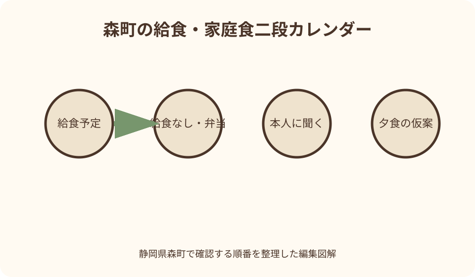
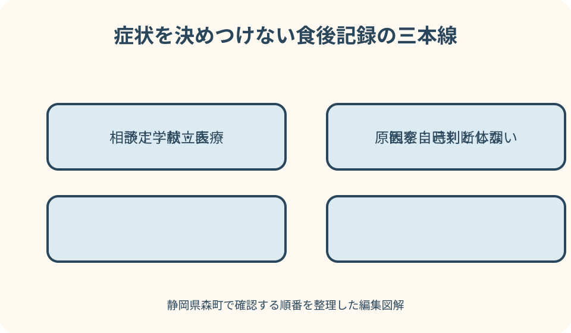

学校・就学・家庭記録｜最終確認 2026-08-10
静岡県森町の学校給食だよりを家庭で活用する｜献立・体調・アレルギーの確認法
献立表は、家庭の夕食を決める便利な手掛かりです。ただし、料理名だけから原材料やアレルギー対応、子どもが実際に食べた量まで判断することはできません。給食だよりも、食育の話題と個別対応の通知では役割が違います。本稿では森町の家庭が、献立、給食のない日、食材、体調を別々に確認し、必要な相談を学校へ正確に伝える方法をまとめます。

編集イラスト結論：献立表は家庭の地図であり、栄養や安全の保証書ではない
学校給食の献立表には、その日に提供予定の料理や食品群、栄養に関する情報が示されます。家庭の買物や夕食を考える手掛かりになりますが、子どもが全量を食べたことや、一日の栄養が自動的に整ったことを示すものではありません。食欲、体調、活動量、家庭の朝食と夕食を合わせて見ます。
料理名が同じでも、使う材料や調味料、調理方法は家庭と学校で異なります。「カレーの日は夕食で肉を避ける」といった一律の置き換えより、子どもがどの程度食べたか、夜に何を食べたいか、買い置きは何かを確認して無理のない献立へ調整します。
食物アレルギーがある場合、一般向け献立表だけで食べられるかを判断しません。文部科学省は、学校、設置者、調理場が方針や手順を整え、保護者や医師などと連携するための指針を示しています。実際の対応は学校の体制と個別状況により異なるため、正式な相談経路へ戻ります。
本稿の確認日は2026年8月10日です。献立、食材、給食実施日、学校の相談方法は変わり得ます。実際に食べる日の最新資料を確認し、ウェブ上の古い献立や他校の例を、自分の子どもの給食内容として使わないでください。
森町の公式情報へ戻る：町、学校、家庭の資料を分ける
森町公式の学校教育課ページは、町の学校教育に関する担当を確かめる入口です。町全体の仕組みに関する質問と、日々の献立、欠食連絡、個別の配慮に関する在籍校への質問を分けます。問い合わせ先が不明なら、質問内容と対象校を短く整理して案内を求めます。
森町公式の小・中学校案内からは、対象校の名称や公式な入口を確かめられます。検索結果に古いPDFや別地域の同名校が出ることもあるため、町の一覧からたどり、資料の年度と発行日を確認します。掲載がないだけで給食がないとは判断しません。
森町の健康増進・食育に関する計画資料には、食育、学校給食週間、地元食材や行事食など町全体の方向を読む手掛かりがあります。これは各日の原材料表や個別対応を確定する資料ではありません。地域の食を学ぶ背景と、当日の安全確認を別に扱います。
家庭では、町の公開資料、学校から配布された献立表、給食だより、個別の詳細資料を別フォルダへ置きます。発行者、対象月、対象校、受領日を記録すれば、似た資料を混ぜにくくなります。個人情報を含む資料は公開リンクと同じ場所へ置きません。
献立表の読み方：日付、主食、主菜、副菜、飲み物を確認する
献立表を受け取ったら、まず対象月、学校、学年区分、発行日を確認します。次に各日を、主食、主菜、副菜、汁物、飲み物、デザートなど見える単位へ分けます。家庭用の表へ全て転記せず、買物や体調に関係する日だけ印を付けます。
料理名だけでは材料を確定できません。「サラダ」「スープ」「揚げ物」の中身は月や学校で異なり得ます。食材を確認する必要がある家庭は、学校から示される原材料や詳細献立の資料、確認方法を使います。市販品と同じ名称でも同じ配合とは限りません。
献立にある栄養量や食品群は、学校給食の計画を理解する参考です。子どもが残した量や家庭で必要な量までは示しません。数値を見て夕食を厳密に足し引きするより、食欲、成長、医療上の指示、家庭の食事全体を見て、必要なら専門職へ相談します。
変更の可能性にも注意します。食材調達、天候、学校行事などで献立が変わる場合があります。変更通知の発信元と日時を確認し、アレルギー対応に関係する家庭は一般の予定変更として済ませず、学校が定める個別確認の手順を優先します。
給食だより：食育の話題と家庭への依頼を分ける
給食だよりには、季節の食材、食事のマナー、朝食、地場産物、衛生などの話題が載ることがあります。家庭では、読み物、子どもと話す話題、提出や確認が必要な項目に色分けします。読み物の一般論を個別の診断や食事制限へ置き換えません。
地元食材や郷土料理の紹介は、森町で食と地域を話す良い入口です。生産地、旬、家庭で知っている食べ方を子どもに聞きます。一方、給食に地元の食材が出ると書かれていても、毎回同じ産地や品種であると決めつけず、資料に示された範囲で理解します。
家庭への呼び掛けがある場合は、いつ、誰が、何をするかへ変換します。「朝食を大切に」なら、朝の食欲や起床時刻を一週間記録するなど、無理のない一歩を選びます。食べないことを叱るだけで終えず、体調や生活時間の変化も見ます。
給食だよりと献立表が一枚になっている場合も、役割は分けて読みます。食育記事は家族会話へ、月間献立は予定へ、提出や相談の案内は期限へ移します。紙面の一部だけを撮影して共有すると発行月が消えるため、資料名と日付を添えます。
家庭の夕食：料理名の重複より、食べた量と暮らしを見る
給食が魚なら夕食は肉、給食がカレーなら夕食は別料理、という組み替えは一つの方法ですが、必須ではありません。家庭の在庫、調理時間、家族の好み、食べられる量を優先し、同じ食材が続いても調理法や副菜を変える程度で十分な日もあります。
子どもに「給食は全部食べた？」と確認するだけでは、急いで食べた、苦手で少量だった、体調が悪かったという違いが見えません。「お腹の具合はどうだった」「食べやすかった物は何」と尋ね、夕食の量や味を決める材料にします。完食を一律の目標にしません。
帰宅後に習い事や運動がある日は、夕食までの間隔も考えます。間食が必要か、夕食時刻をずらすかは、活動量や本人の体調に応じます。献立表だけから補食の量を決めず、持病や競技上の食事管理がある場合は医師や専門職の指示を優先します。
買物表には、給食と違う料理を作るための食材ではなく、家庭で不足しやすい常備品と給食のない日の準備を先に入れます。夕食の重複回避を厳しくすると、家計や調理担当へ負担が集中します。続けられる範囲で一週間を見渡します。
食材の重なり：回数ではなく、役割と食べ方を見直す
卵、乳製品、大豆製品などが給食と夕食で重なることはあります。アレルギー等の医学的な制限がなければ、重なった事実だけで避ける必要があるとは言えません。家庭では同じ料理が続く負担、本人の好み、他の食品との組み合わせを見ます。
野菜は品名だけでなく、生、煮る、炒める、汁に入れるなど食べ方が変わります。給食で苦手だった食材を夜に罰のように再提供せず、量を減らす、別の調理にする、今回は出さないという選択肢を持ちます。食べられた量を競わせません。
加工食品や調味料は、料理名から原材料を推測できないことがあります。家庭のアレルギー確認では、学校の詳細資料と正式な説明へ戻ります。「普段食べている商品と同じはず」という判断は避けます。家庭で新しい商品を試す場合も、学校給食の安全確認とは別です。
重複を記録するなら、食材名だけでなく、朝・給食・間食・夕食のどこで、どの程度、どの調理で食べたかを簡潔に残します。記録が負担なら、気になる食材や体調変化があった日だけで構いません。数字の完全性より相談に使える具体性を優先します。
給食がない日：弁当、短縮日、休校を別々に確認する
給食がない日には、弁当持参、午前授業、行事先での食事、家庭で昼食、臨時休校など複数の形があります。年間予定に「給食なし」とあるだけでは、子どもがどこで何を食べるか確定しません。直近の学校通知で下校時刻と持ち物を確認します。
弁当日は、提出物と同じように前日確認を設定します。保冷、温度、持ち運び時間、子どもが開けられる容器を家庭の条件に合わせます。特定の弁当内容が安全だと断定せず、学校が示す注意や公的な衛生情報を確かめます。
急な休校や給食中止では、家庭にある物で作れる昼食候補を二つほど決めておくと負担を減らせます。買い置きは賞味期限と保管方法を確認し、アレルギーのある家族は共有食品との取り違えを防ぎます。備蓄だけで長期の栄養を保証できるものではありません。
放課後の預かりや教育支援の場を利用する日は、昼食の要否が通常登校日と異なる場合があります。森町教育支援センターの案内にも弁当の要否が曜日で異なる記載があります。利用する本人について、最新の開級・持参条件を直接確認します。
食物アレルギー：一般献立と個別対応資料を分ける
食物アレルギーのある子どもについては、一般向け献立表、詳細な原材料情報、学校との個別確認、医師の診断情報を別の資料として扱います。一般献立に原因食品の名前が見えないから食べられる、という判断はしません。加工品や調味料の確認方法を学校へ尋ねます。
文部科学省の指針は、学校給食での対応を学校や調理場の体制、児童生徒の状況に応じて整える考え方を示しています。家庭が国の指針だけを読んで、学校の具体的対応を決めるものではありません。学校が示す申請、面談、更新の手順に沿います。
学校生活管理指導表など医師の記載が関わる資料は、保護者の自己申告メモとは役割が異なります。いつ必要か、誰へ提出するか、更新時期、費用や受診の要否を在籍校へ確認します。過去の診断や兄弟姉妹の書類をそのまま転用しません。
学校の対応が始まる前、献立変更時、行事食、校外学習では、確認経路が変わることがあります。家庭の判断だけで除去、代替、弁当を切り替えず、学校と決めた方法を使います。対応があることも、事故が起きないことを保証するものではありません。
症状と緊急時：家庭メモは学校の対応手順を上書きしない
食後に皮膚、呼吸、消化器、意識などの変化があったときは、家庭の記録より安全確保を優先します。緊急性がある場合は119番など適切な手段を使い、医療上の指示に従います。この記事は症状の診断や、薬を使う時機を決めるものではありません。
学校へ提出する緊急時情報は、学校が指定する様式と手順に合わせます。薬の名称、保管、使用、連絡先は、家庭の献立ノートへ写しただけで共有完了とは考えません。学年や担当者が変わる時期には、学校から示された更新方法を確認します。
症状が落ち着いた後は、食べた物、時刻、症状、対応、受診、学校との連絡を事実として残します。原因食品を家庭で断定して広く除去すると、必要な栄養や今後の診断に影響することがあります。医師と学校へ記録を示し、次の対応を相談します。
子ども本人にも、体調の違和感を我慢せず伝える言葉を一緒に決めます。「口が変」「息がしにくい」など本人が使う表現を保護者が把握し、学校へ共有します。ただし、子どもだけに原因判断や緊急対応の責任を負わせません。
体調記録：食べた事実と推測を分ける
体調記録には、日付、時刻、学校で食べたと本人が話した物、量の目安、症状、睡眠、発熱、運動、服薬などを必要な範囲で書きます。献立表に載っていたから食べた、と補わず、予定と本人の話を別欄にします。
「牛乳で腹痛になった」と結論を書く前に、「給食後14時ごろ腹痛、本人は牛乳を飲んだと話した」のように観察事実を記します。原因の判断は医療の領域です。体調不良が繰り返す、強い、生活に影響する場合は、記録を持って医療機関へ相談します。
一回の不調を見逃さないことは大切ですが、毎食を細かく採点すると子どもが食事を不安に感じることがあります。通常日は短く、症状がある日だけ詳しくする方法もあります。本人の前で体重や食べ残しを責める材料にしません。
学校へ伝える際は、家庭で見た症状、学校で起きたと本人から聞いたこと、保護者の推測、医師からの説明を分けます。学校側の記録と照合し、次に何を観察し、誰へ連絡するかを確認します。記録だけで対応が決まるとは限りません。
好き嫌いと食べ残し：完食だけを成果にしない
献立表を見て苦手な料理が続くと分かったら、事前に叱るのではなく、何が苦手かを聞きます。味、におい、温度、食感、量、時間の短さなど理由は異なります。「一口食べる」ことが適切かも子どもの状態で違います。
帰宅後の空腹が強い日には、給食を残した可能性だけでなく、運動量、昼食時刻、体調を確認します。すぐに大量の間食を出すのではなく、夕食までの時間と本人の様子を見ます。継続する場合は学校や医療・栄養の専門職への相談を考えます。
苦手な食品を家庭で練習する場合も、学校で食べるための訓練だけにしません。調理を手伝う、少量を別皿にする、匂いを確かめるなど、本人が選べる段階を作ります。アレルギーが疑われる食品を家庭で試す判断は医師へ相談します。
学校へ相談するときは、「食べません」だけでなく、いつから、どの料理、どの程度、家庭ではどうか、体調変化、本人の困り感を伝えます。量の調整や声掛けなど、学校で可能な対応は個別に確認し、希望どおりになると保証はしません。
朝食と給食：昼だけを直して一日を評価しない
朝食が取れない日は、起床時刻、食欲、体調、前夜の食事や睡眠を見ます。給食で補えばよいと決めつけず、食べやすい量や時間を家庭で探します。症状や欠食が続くときは、養護教諭、医療機関など適切な相談先を検討します。
朝に食べられる物が限られる家庭では、理想的な献立を一度に目指さず、飲み物、一口の主食、準備しやすい物など現状から始めます。持病や治療上の制限がある場合は、一般的な食育記事より医師などの個別指示を優先します。
給食だよりの朝食特集は、家族会議の材料になります。誰が準備するか、前夜にできること、起床から出発まで何分あるかを確認します。子ども一人の意欲不足にせず、家族の勤務、台所の動線、買物の頻度も見直します。
朝食、給食、夕食の写真を毎日揃える必要はありません。一週間のうち困った日だけ、時刻と食べやすかった物を記録すれば、相談に使えることがあります。記録を栄養評価の代わりにせず、成長や健康への不安は専門職へつなぎます。
行事食と地場産物：学びの話題と原材料確認を分ける
行事食や郷土料理は、季節、地域の歴史、生産者の仕事を話す機会になります。森町の食育資料に地元食材や伝統料理への言及があれば、子どもが給食で何を知ったかを聞き、家庭で同じ料理を再現することだけを目標にしません。
地場産物という表示から、産地、栽培方法、アレルゲンの有無をすべて推測することはできません。安全確認が必要な家庭は、学校が提供する詳細資料と個別の連絡へ戻ります。「地域の物だから安心」という表現でリスクを小さく見積もりません。
家庭で関連料理を作る場合は、給食の完全再現ではなく、家にある材料と時間に合わせます。レシピが紹介されていても、分量や加熱を家庭の人数へ調整し、食中毒予防など公的な衛生情報を参考にします。学校と同じ安全管理を家庭で再現できるとは限りません。
子どもが行事食を好まなかったときも、地域文化への関心がないと結論づけません。由来を読む、食材を見る、生産場所を地図で探すなど、食べる以外の学びがあります。アレルギーや感覚過敏のある子にも参加方法を一つに限定しません。
学校へ相談する：献立の質問、健康相談、緊急連絡を分ける
献立や原材料について尋ねる場合は、対象日、料理名、知りたい食品、確認した資料名を伝えます。「何が入っていますか」だけでは範囲が広すぎます。回答を受けた日と担当部署を記録し、別の日の同名料理にも自動で当てはめません。
食後の体調や継続する食欲の問題は、献立問い合わせとは別の相談として整理します。家庭の観察、子どもの話、学校で確認したいこと、医師の説明を分けます。学校の誰へ伝えるかは、担任、養護教諭、給食担当など学校の案内に従います。
食物アレルギーの対応は、年度初めだけで終わるとは限りません。診断、原因食品、薬、学年、行事が変わったときの更新方法を確認します。口頭で伝えたから全関係者へ共有されたと考えず、学校が指定する正式な書類や面談を使います。
緊急症状があるときは通常の問い合わせ順を待ちません。救急要請や学校の緊急手順を優先します。落ち着いた後に記録を整え、今後の対応を学校と医療機関へ相談します。記事や給食だよりは緊急判断の代わりになりません。
相談前の一枚：事実、希望、未確認を区別する
相談メモの上部には、児童生徒名、学校、学年、相談日、対象の給食日を書きます。中央を、献立に書かれた事実、本人が話したこと、家庭で観察したこと、医療機関からの説明、保護者の希望に分けます。
本人の話は言葉を変えすぎずに記録します。「少し気持ち悪かった」を「アレルギー症状」と書き換えません。反対に、命や身体に関わる変化を軽く表現せず、時刻と対応を具体的に伝えます。判断が必要な部分は専門職へ残します。
希望は「安全にしてください」だけでなく、詳細資料の受取方法を知りたい、面談時期を確認したい、給食のない日の持参方法を相談したい、と行動へ変えます。学校で可能な範囲は確認が必要で、家庭の希望がそのまま実施されるとは限りません。
相談後は、回答、追加資料、次回連絡日、家庭がすることを追記します。個人名を外部へ広く共有する必要はありません。古い対応内容を翌年度へそのまま持ち越さず、更新が必要か学校へ確かめます。
家族カレンダー：給食あり、弁当、確認待ちを色と文字で示す
月初めに、給食あり、給食なし、弁当、短縮日、校外行事、確認待ちをカレンダーへ移します。色だけでは家族によって意味が違うため、「弁当」「午前」「要確認」と文字でも書きます。献立内容を毎日すべて転記する必要はありません。
アレルギー確認が必要な日は、対象料理と確認期限を別予定にします。当日の朝に献立を見るだけでは相談が間に合わないことがあります。学校から示された詳細資料の配布時期と返答方法を確認し、家庭内の担当者を決めます。
夕食計画は三日から一週間程度の幅で仮置きします。給食変更、家族の残業、子どもの食欲で変えられる余白を残します。同じ食材が重なる日を警告表示にせず、「調理法を変えるか確認」といった柔らかなメモにします。
更新した人は、情報源と更新日を残します。家族の一人が紙、別の人が配信アプリを見ている場合、古い予定が並存しやすくなります。月末に不要な献立画像を整理し、体調や個別対応を含む記録は共有範囲を限定します。

固有図解案1：森町の給食・家庭食二段カレンダー
一つ目の図解は、森町の山並みと茶畑を背景に、上段へ学校給食、下段へ家庭の食事を置く一週間カレンダーです。上段には献立、給食なし、弁当、変更確認を記し、下段には夕食の仮案、買物、体調メモを置きます。上下を同じ料理名で機械的に結びません。
各日の中央には「本人に聞く」小窓を置き、食べた量、食べやすさ、空腹、体調の四つから必要な項目だけ選べるようにします。給食予定と実際に食べた物が違う可能性を示すため、予定線は点線、本人確認後の記録は実線で描きます。
給食のない日は、弁当、早帰り、家庭昼食、確認待ちの四つの札へ分けます。家族の送迎や勤務へ影響する場合は別の矢印を出します。食事だけでなく生活予定とつなぐことで、月間献立を眺めるだけの図にしません。
アレルギーに関する日は赤い食材表示ではなく、学校との個別確認へ戻る鍵アイコンを置きます。一般献立から安全を判定する図にならないよう、詳細資料、学校、医師の三者確認欄を別枠にします。

固有図解案2：症状を決めつけない食後記録の三本線
二つ目は、食後の出来事を「予定」「観察」「相談」の三本線で示す図です。予定線には献立表の料理、観察線には本人が食べたと話した物と体調、相談線には学校・医療へ伝えた内容を置きます。予定から原因へ直接矢印を引かないことが特徴です。
観察線には、時刻、量の目安、症状、睡眠、運動、服薬の小さな欄を設けます。すべてを毎日埋める表ではなく、気になる日に必要な欄だけ使います。推測は吹き出しへ分離し、診断名のように見えない表示にします。
相談線は、緊急、学校確認、医療相談の三方向へ分かれます。呼吸や意識など差し迫る危険では119番などを優先し、通常の献立質問とは別経路であることを視覚化します。具体的な薬の使用判断は図に書かず、個別指示へ戻します。
図の末尾には「次に確認する日」を置きます。症状がなかったことも記録でき、食事のたびに不安を強めない設計にします。家庭メモが学校の正式様式や医師の診断を代替しないことを、下部に明記します。
学校給食だよりを家庭で活用する良い点
献立表を家庭予定へ結び付ける良い点は、弁当日や早帰りを早めに見つけられることです。食事内容だけでなく、買物、調理担当、送迎を一緒に考えられます。月初めに確認する習慣は、当日朝の見落としを減らします。
給食だよりは、子どもと地域の食、旬、食事の習慣を話す入口になります。「全部食べたか」だけでなく、初めて知った食材や作る人の仕事を聞けます。食べる量と学びを別に評価できる点も大切です。
体調記録を予定と分ければ、献立に載っていた食品を直ちに原因と決めることを避けられます。学校や医療機関へ、時刻と観察を具体的に伝えやすくなります。ただし、記録が診断や安全確保を保証するものではありません。
家庭の夕食を柔軟に考えることで、調理担当の負担も見直せます。重複をなくすために毎日別料理を作るのではなく、給食のない日と家庭の都合を優先できます。続けられる計画が、家族の食卓には実用的です。
学校給食情報で注文したい点
献立表には、対象校、対象月、発行日、変更時の連絡方法が分かりやすく示されていると家庭で扱いやすくなります。料理名と詳細原材料の資料が別の場合、どこへ戻れば確認できるかの案内も重要です。
給食がない日は、「なし」だけでなく、弁当、早帰り、校外行事など家庭の行動が分かる形で示されると見落としを減らせます。ただし、献立表だけへ全行事情報を詰め込むのではなく、学校予定と相互に参照できる方法が望まれます。
食物アレルギー対応では、申請、面談、詳細資料の受取、献立変更、緊急連絡、年度更新の流れが家庭から見えることが大切です。公開資料で個別情報を示す必要はありませんが、相談の入口と締切が明確なら準備しやすくなります。
デジタル配信だけ、紙だけのどちらかでは受け取りにくい家庭もあります。再確認や再配布の方法が分かれば、友人間で個人情報を含む画面を転送する必要を減らせます。家庭側も受信設定と保管場所を年度初めに点検します。
間違いやすい読み方を避ける
一つ目の誤りは、献立に書かれた料理を子どもがすべて食べたと考えることです。欠席、変更、食欲、食べ残しがあります。夕食調整や体調記録では、予定と本人の話を別にします。
二つ目は、料理名から原材料を断定することです。同じ名称でも配合は異なり、加工品や調味料の中身は見えません。アレルギー確認は学校が示す詳細資料と正式な相談へ戻り、家庭の経験だけで判断しません。
三つ目は、給食の栄養表示を一日の必要量と同じだと受け取ることです。家庭の朝食、夕食、間食、活動、体調まで含む個別評価にはなりません。成長や栄養への心配は医師や管理栄養士など適切な専門職へ相談します。
四つ目は、給食だよりの一般的な助言を、すべての子どもへ同じ形で当てはめることです。食物アレルギー、感覚、嚥下、病気、文化的背景など事情は異なります。本人を責めず、必要な配慮を学校と相談します。
代案・結論：毎日の献立管理が難しいときは三点だけ見る
月間献立を毎日細かく確認できない家庭は、給食がない日、個別確認が必要な日、学校への返答期限の三点だけ先にカレンダーへ入れます。夕食の重複は余裕がある週だけ見ても構いません。安全や提出に関わる項目を先にします。
夕食計画を立てられない日は、家庭の定番をいくつか用意し、子どもの空腹と体調を見て量を調整します。給食と料理が重なっても失敗ではありません。家族の予算、時間、食べられる物を優先します。
紙の献立を失くした場合は、友人家庭の古い画像に頼らず、学校が案内する再確認方法を使います。ウェブ版があるか、再配布できるかは学校ごとに確認します。アレルギー対応に必要な詳細資料は、一般献立とは別に問い合わせます。
結論として、献立表は予定、給食だよりは学び、体調記録は観察、個別対応は学校と医療への相談として分けます。今日の作業は、今月の給食なしの日と確認期限を二つ見つけ、家族カレンダーへ入れることから始めてください。
大石の視点：森町の買物動線と台所の負担まで一緒に見る
森町での暮らしは、住む地区、勤務先、買物先、送迎によって台所へ戻れる時刻が違います。献立表を見て毎日異なる夕食を用意するより、買物できる日に常備品を整え、給食がない日の昼食を優先する方が現実的な家庭もあります。
山間部や移動時間の長い家庭では、献立変更を受けてすぐ買物へ行けない場合があります。冷凍、乾物、缶詰など家庭に合う備えを少量持ち、期限を回しながら使います。特定の食品だけで栄養や災害時の食事が整うとは考えません。
住まいの台所が狭い、冷蔵庫容量が限られる、家族の帰宅が別々という条件も食事計画へ影響します。収納や設備の問題を保護者の努力だけで埋めず、献立の簡略化、家族の分担、買物回数の調整を先に試します。
不動産の新しさや広さが、食生活の良し悪しを決めるわけではありません。食卓で話せる時間、緊急時に情報へ戻れる場所、個別資料を安全に保管する場所を今の住まいで作ることが先です。設備変更は暮らしの記録を見てから考えます。
家庭に残す月次記録
月次記録の上部には、学校、学年、対象月、献立表の発行日、最後の変更確認日を書きます。中央は、給食なし、弁当、個別確認、体調メモ、学校への質問の五列にします。全献立を書き写すより、家庭の行動が必要な日を残します。
体調メモには、献立予定と実際に食べたと本人が話した物を分けます。症状の時刻と家庭の対応を書き、原因の断定は避けます。医療機関からの説明は、保護者の推測と別欄に置きます。
学校へ質問したら、連絡日、使った方法、回答の要点、次の確認日を追記します。アレルギーや健康情報を含むため、共有先は必要な家族に限定します。一般の家族カレンダーには「個別確認あり」とだけ示す方法もあります。
月末には、次月へ持ち越す個別対応、書類更新、受診、学校面談を確認します。古い献立表は参考資料として年度と月が分かる形にし、不要な個人情報は保存の必要性を見直します。
まとめ：予定、食事、体調、相談を一列に混ぜない
静岡県森町で給食情報を家庭に生かすには、町公式の学校案内を入口に、在籍校の最新献立と給食だよりを確認します。献立表は日々の予定、給食だよりは食育の話題として読み、個別の原材料資料とは分けます。
家庭の夕食は、給食との重複だけで決めません。子どもが実際に食べた量、体調、活動、家族の在庫と調理時間を見ます。給食がない日と弁当の確認を先にし、夕食の違いは無理のない範囲で作ります。
食物アレルギーや食後の症状は、一般献立から自己判断しません。医師の診断情報と学校が示す手順に沿い、緊急時は救急対応を優先します。家庭メモは事実を伝える助けですが、栄養評価、診断、安全の保証にはなりません。
最初の一歩は、今月の献立表へ、給食なし、弁当、個別確認の印を付けることです。体調で気になる日があれば、予定と観察を分けて一行残し、学校へ尋ねる一点を具体化してください。
公式情報・確認先
掲載内容は次の一次情報を基礎に整理しました。営業、料金、催し、交通は変わるため、出発前または手続き前にリンク先で最新情報を確認してください。
- 学校教育課（静岡県森町、2026-08-10確認）
- 小・中学校（静岡県森町、2026-08-10確認）
- 森町健康増進計画・森町食育推進計画案（静岡県森町、2026-08-10確認）
- 森町教育支援センター『わかば』（静岡県森町、2026-08-10確認）
- 学校保健、学校給食、食育（文部科学省、2026-08-10確認）
- 学校給食における食物アレルギー対応について（文部科学省、2026-08-10確認）
- 学校給食における食物アレルギー対応指針（文部科学省、2026-08-10確認）
- 学校給食実施基準の一部改正について（文部科学省、2026-08-10確認）